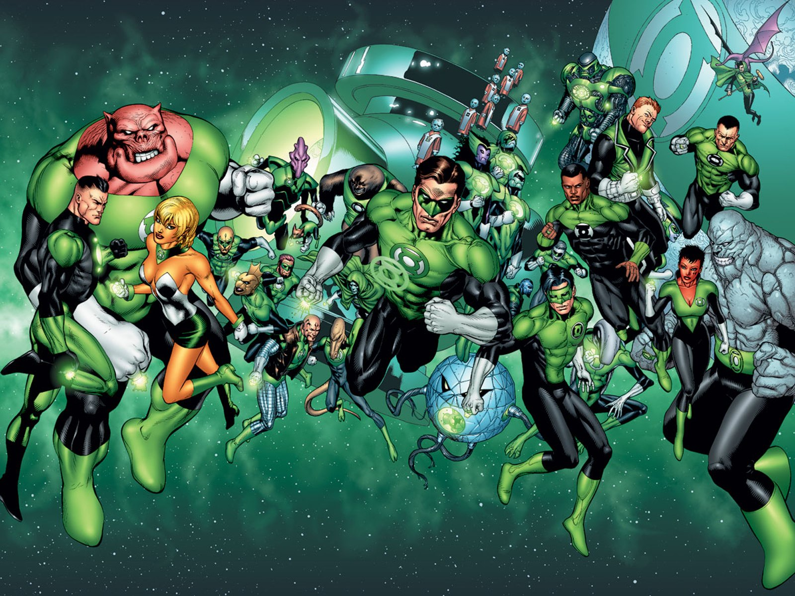

There were orginally natives of an overpopluated planet named Maunltus who evovled into Immortals of great power. They moved to the plantet Oa they then delcared themselves the gaurdian of the universe. They were betrayed by one of there own Cronis and created multiple universe along with the antimoniter who wanted to destroy all the life in every universe the gaurdians banished Cronus. To protect the universe the guardians created the man hunters to watch over and protect the 3600 sectors from anything that would threaten it but the manhunter's could not feel emotions are understand fear as they were machines. The flaw of the Manhunter s became there downfall. One day they traveled to sector 666 a sector filled with demon like aliens the manhunter's had a glitch in there system which caused them to see every thing in sector 666 as a threat the Manhunter's hunted and killed every living thing in sector 666 cauing the death of billions of deaths the Manhunters. The gaurdians realized there mistake of using robots to govern people and decommised the Manhunter's. THe gaurdians still wanting to help the univers after this mistake decide that biological beings would be suited than animals and they created the green lanter central battery and the green lantern rings. The rings would seek out beings of great will power they would bring them back to Oa to be trained to protect the galaxy they became the green lantern corps. There lantern oath is "In brightest day, in blackest night, No evil shall escape my sight. Let those who worship evil's might Beware my power--Green Lantern's light!"
 Here is a orange lantern page. Here is a Red lantern page. Here is a green lantern page. Here is a indigo lantern page. Here is a Blue lantern page. Here is a sinestro corp page. Here is a sinestro corp page.